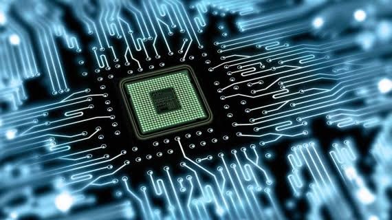
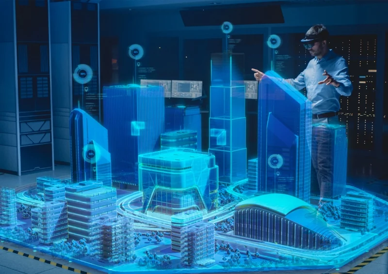
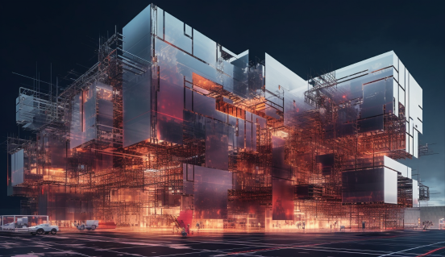

About DPI
Dhaka Polytechnic Institute (DPI) is one of the oldest and largest technical education institutions in Bangladesh, dedicated to producing skilled diploma engineers. DPI offers a rigorous 4-year Diploma-in-Engineering program across 12 specialized technologies, including Civil, Computer, Electrical, Mechanical, and Electronics engineering. Admission is fiercely competitive and strictly based on SSC merit, often requiring near-perfect GPA scores to secure a seat. Operating in two shifts, the institute provides students with extensive hands-on training through modern workshops, labs, and a mandatory final-semester industrial attachment.
HISTORY
"East Pakistan Polytechnic Institute, Dhaka" was established in May 1955 by Oklahoma State University-Stillwater with funding from the Ford Foundation.[3] By the mid-1960s, it had become "Dhaka Polytechnic Institute".Established on May 5, 1955, Dhaka Polytechnic Institute (DPI) is the oldest, largest, and most prestigious government engineering polytechnic institution in Bangladesh. Located across a sprawling 27-acre campus in the Tejgaon Industrial Area, Dhaka, DPI is affiliated with the Bangladesh Technical Education Board (BTEB). It serves as the primary hub for mid-level engineering manpower in the country, boasting an enrollment of over 10,000 students.
All Departments

Computer Science & Technology
Teaches software development, programming, computer networking, database management, and modern IT solutions. It aims to build a skilled technical workforce for the rapidly growing software and technology sector.

Civil Technology
Focuses on the planning, design, construction, and maintenance of buildings, roads, bridges, and modern infrastructure. The core objective is to develop skilled engineers proficient in surveying, structural analysis, and construction management.
Electrical Technology
Provides hands-on training in electrical circuits, transformers, generators, motors, and power distribution systems. This department plays a vital role in maintaining and advancing industrial and residential electrical networks.

Mechanical Technology
Covers machinery, thermodynamics, manufacturing processes, and industrial production. Diploma engineers from this department are essential for keeping the mechanical operations of factories and heavy industries running smoothly.
Electronics Technology
Focuses on microprocessors, circuit design, communication systems, sensors, and modern electronic devices. This field is highly relevant to telecommunications, industrial automation, and smart device manufacturing.

Architecture Technology
Covers the fundamentals of aesthetic, sustainable, and functional architectural design, space planning, and building drafting. Graduates contribute to modern urban planning and eco-friendly structural design.
Automobile Technology
Deals with vehicle engines, transmission, braking systems, and modern electrical and hybrid vehicle technologies. It prepares skilled technicians and engineers for the automotive industry, service centers, and transport sectors.
(RAC) Technology
Focuses on the design, installation, and maintenance of refrigeration, heating, ventilation, and air conditioning systems. Graduates are in high demand across cold storage facilities, food preservation units, and commercial or residential cooling systems.
Food Technology
Provides comprehensive education in food processing, preservation, quality control, food safety, and packaging technology. This department plays a key role in ensuring safe and high-standard production in the food and beverage industry..
Chemical Technology
Covers chemical processes, laboratory analysis, industrial chemistry, and production management. Graduates work across pharmaceuticals, fertilizers, petrochemicals, and various chemical manufacturing industries.
Environmental Technology
Focuses on environmental protection, waste and water management, pollution control, and sustainable development. It equips students to create eco-friendly solutions to mitigate the environmental impact of industrialization and urbanization.
Power Technology
Provides specialized training in power generation plants, turbines, boilers, substations, and renewable energy management. This department is crucial for ensuring uninterrupted power supply and advancing the energy sector.
FAQ
What are the admission eligibility criteria for DPI?
Applicants must have passed the SSC or equivalent examination with a minimum GPA requirement set by the Bangladesh Technical Education Board (BTEB).
How many shifts are operated at Dhaka Polytechnic Institute?
DPI operates in two shifts: the 1st Shift (morning) and the 2nd Shift (afternoon) offering diploma courses across multiple engineering departments.
Is industrial attachment mandatory for CST students?
Yes, completing a mandatory industrial attachment training program in the final semester is required to receive the Diploma-in-Engineering degree.
Does DPI offer hostel facilities for students?
Yes, DPI provides separate residential hostel accommodation for both male and female students based on application merit.
Contact Us
Location: Tejgaon Industrial Area, Dhaka-1208, Bangladesh.
Email: principal_dpi54@yahoo.com
phone: 02-58151880